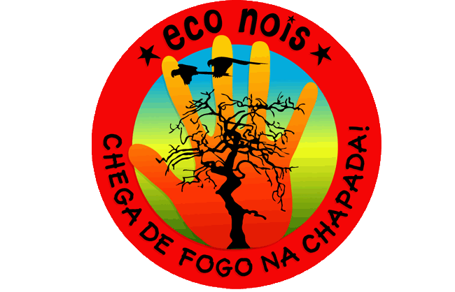
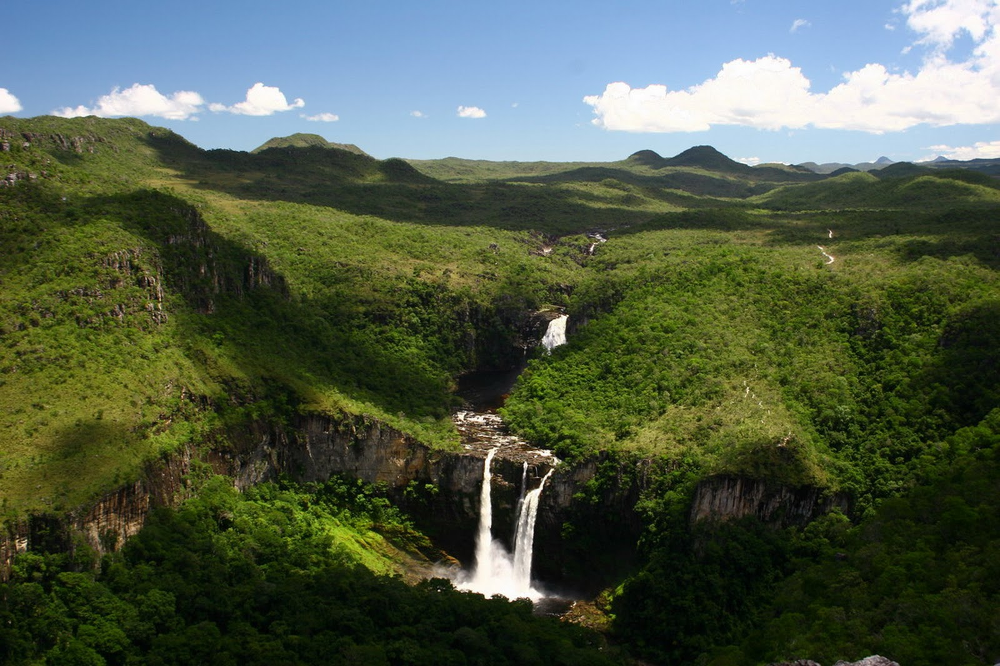
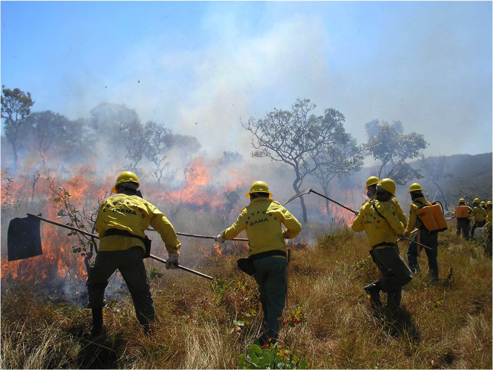
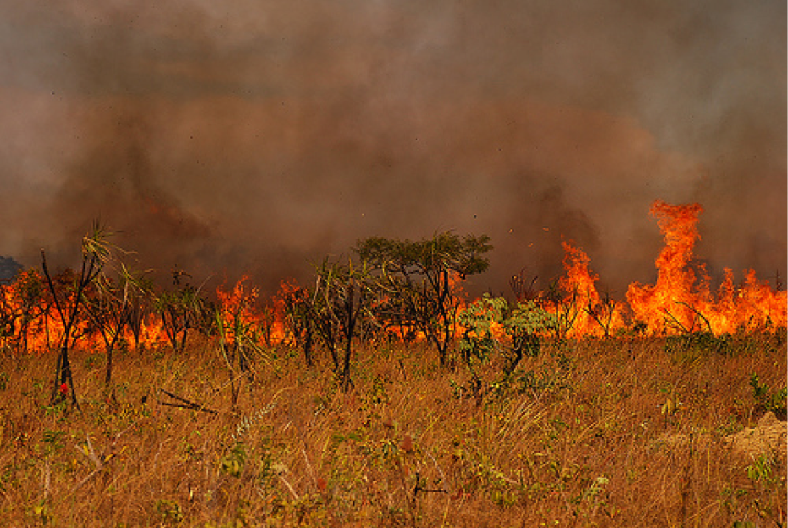
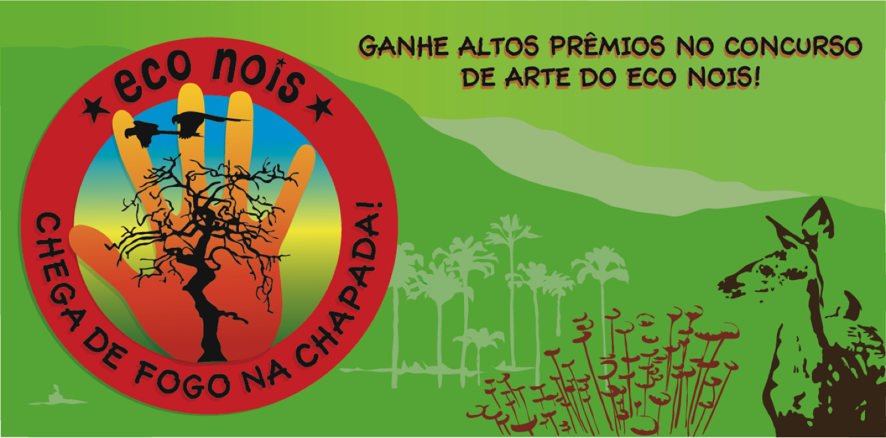
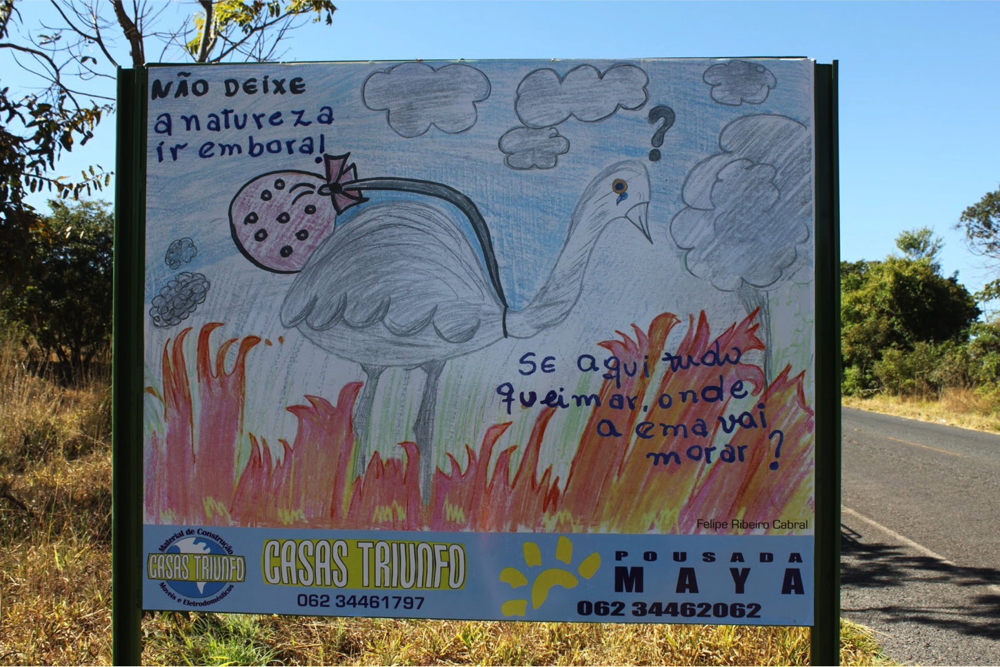

Chega de Fogo na Chapada!
Eco Nois realizou o projeto “Chega de Fogo na Chapada!”, que mobilizou a comunidade de Alto Paraíso num concurso de arte conscientizando a população dos problemas que os incêndios representam para a Chapada dos Veadeiros.

O Problema do Fogo
O Parque Nacional da Chapada dos Veadeiros fica em uma das savannas mais biodiversas do mundo abrigando cerca de 10 mil espécies de animais e plantas, além de ser o maior berço de aves do Brasil.

Perigosas queimadas ocorrem durante o período da seca. Queimar a vegetação é o método mais rápido e barato encontrado pela população rural para limpar terrenos, mas isso não vem sendo feito de maneira responsável.

Sem controle, esses incêndios vão muito além das áreas destinadas e atingem enormes proporções, afetando a fauna e flora local, prejudicando mananciais de rios e colocando em risco a vida de seres humanos e suas moradias.

O Projeto do Eco Nois
Os moradores da cidade foram convidados a participar de um concurso de arte criando cartazes de conscientização a respeito dos danos causados pelos incêndios
